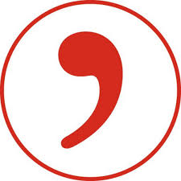
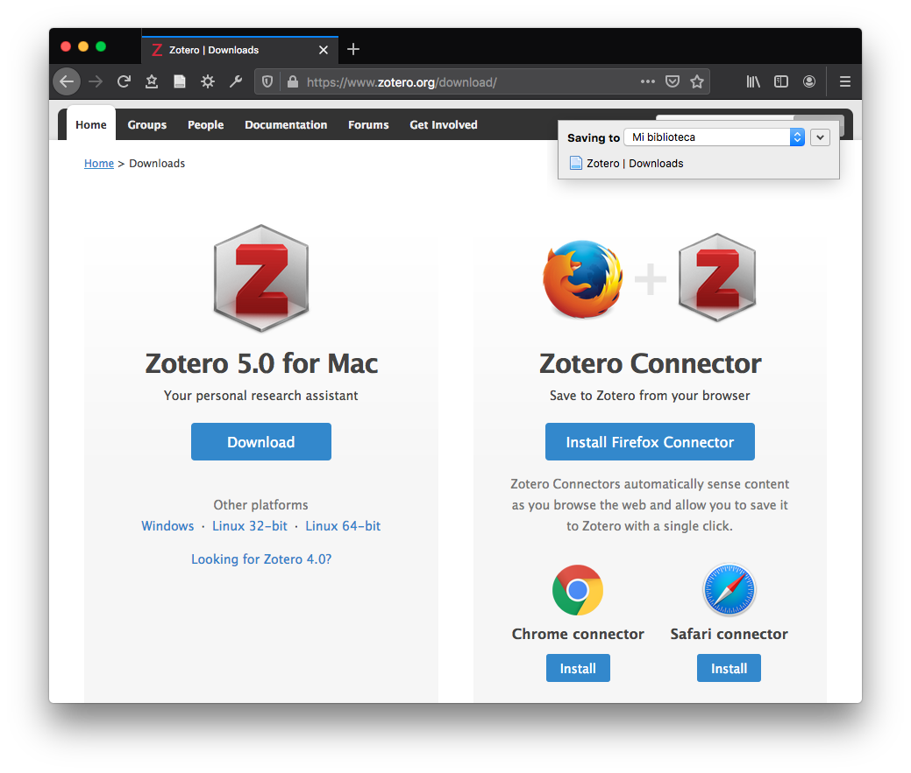
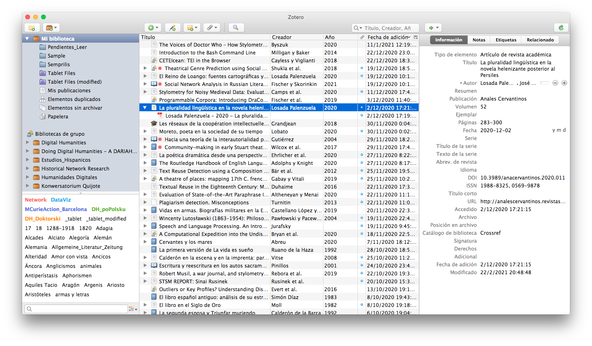
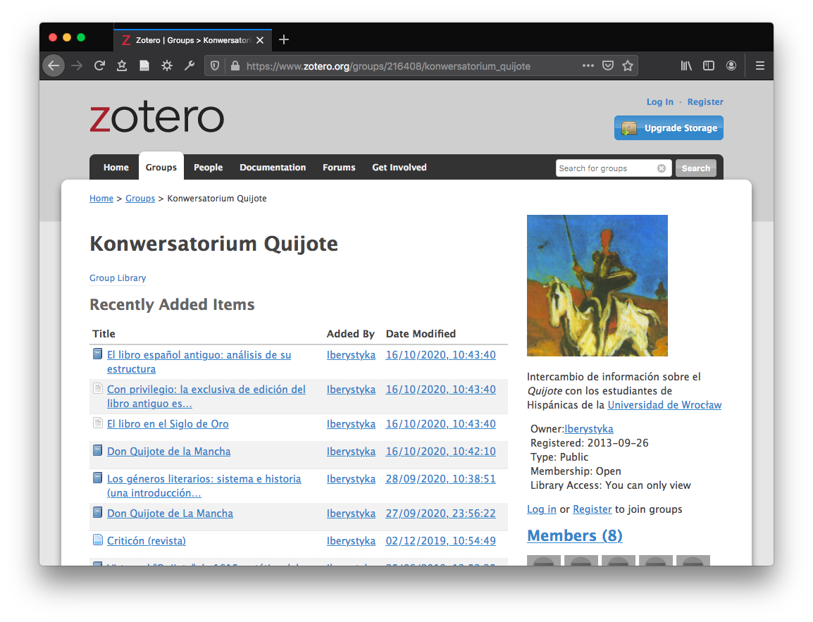
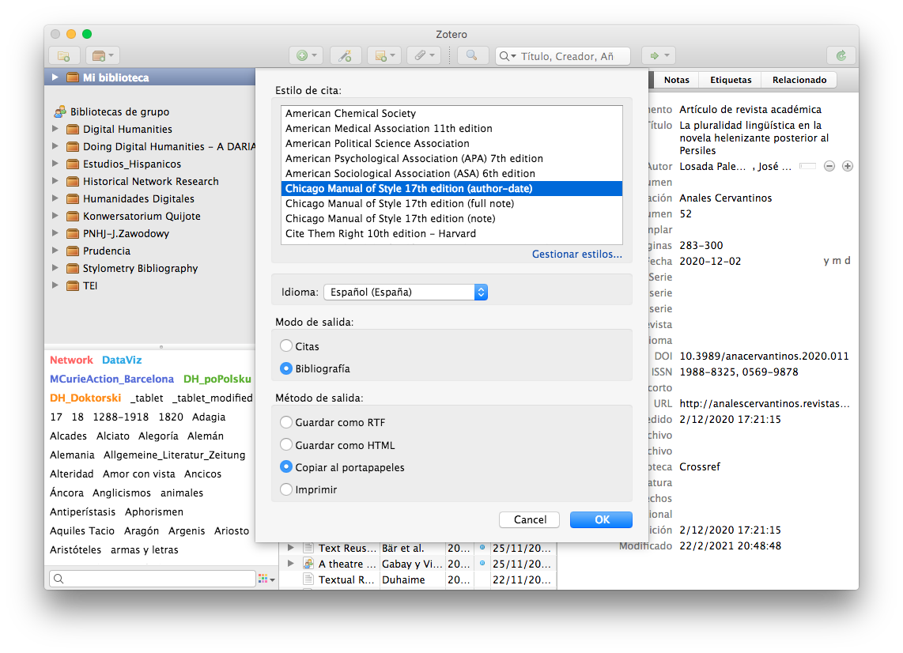
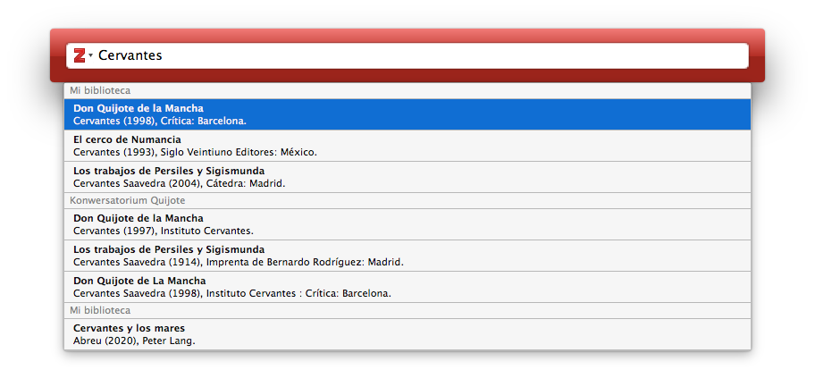

Gestión bibliográfica con Zotero
Contenido
Introducción
Sobre Zotero y otros gestores
Instalar Zotero: primeros pasos
Importar datos
Organizar la bibliografía
Generar referencias
## Introducción ### Necesidad de citar y referenciar las lecturas - **Por qué**: estructura la argumentación; reutilización del pensamiento científico; distigue entre pensamiento propio y ajeno (plagio). - **Cuándo**: <span style="color: coral;">☞</span> información inspirada o tomada de otros, también si no es literal. - **Qué**: libros, artículos, páginas de Internet, películas, fotografías, manuscritos, gráficos, entrevistas, blogs, … Las convenciones dependen también del ámbito (académico, público, redes sociales).
- **Cómo**: <span style="color: coral;">☞</span> máxima claridad y coherencia. - Citas: distinción tipográfica (comillas, sangrados, fuentes tipográficas). - Referencias bibliográficas: breve (en texto), largo (notas, final). Diferentes (¡muchas!) convenciones: Estilo Chicago, MLA, Estudios Hispánicos, etc. - **Para qué** (función de las citas): ser evidentes para el lector. - Punto de partida; oposición; refuerzo; fuentes primarias del análisis.
La necesidad de citar y referenciar no solo por el plagio: citas y referencias están en la <span class="resaltado">estructura misma de los discursos</span> y, en especial, del académico.
### Necesidad de gestionar la bibliografía científica, las lecturas, las fuentes: - **Por qué**: Fuentes primarias; estado de la cuestión; clasificación, anotación, análisis. - **Cómo**: gestores bibliográficos: Zotero, Refworks, Mendeley, Citavi, Papers, ...
## Sobre Zotero - Simplifica el proceso de crear un registro bibliográfico, formatearlo, anotarlo y compartirlo. - Se ejecuta localmente; gratuito para Mac, Windows y Linux. - Permite recopilar, gestionar y citar todo tipo de fuentes, automatizando el proceso, también en los navegadores (Zotero conector). - Gestión de documentos digitales como PDF.
### Características más importantes - Extracción e inclusión automática de las fuentes en línea (DOI, ISBN, catálogos de bibliotecas) - Creación automática de referencias bibliográficas (Chicago, APA, Estudios Hispánicos, etc.). - Gestión de todo tipo de fuentes (artículos, libros, videos, blogs, etc.) - Inclusión de archivos (PDF, páginas web), notas, etiquetas. - Búsqueda integrada del texto de los documentos. - Datos en la nube (Zotero); privados; consulta en línea. - Compartir las fuentes individualmente o en grupo. - Integración con los procesadores de texto Microsoft Word y Libre/Open Office.
### Otros gestores |Zotero | Mendeley | Refworks | EndNote | Citavi | |---|---|---|---|---| | | | | |  | | Corporation for Digital Scholarship | Elsevier | ProQuest | Clarivate | Swiss Academic Software | | free + open source | propietario | propietario | propietario | propietario | | Mac, Windows, Linux | Mac, Windows, Linux | Mac, Windows, ~~Linux~~ | Mac, Windows, ~~Linux~~ | ~~Mac~~, Windows, ~~Linux~~ |
## Instalación. Primeros pasos <img style="width: 30%; box-shadow: none; border-bottom: none" src="https://www.zotero.org/static/images/bs4theme/zotero-logo.1519312231.svg"></img> ### Instalar programa [<zotero.org/download/>](https://www.zotero.org/download/) - Opcional _connector_ (navegador). - Opcional: abrirse un cuenta (datos en línea, etc.) - Opcional: procesadores de texto (_preferencias > citar > procesadores de texto_).

### Interfaz 
### Importar datos - Inclusión manual<img style="box-shadow: none; border-bottom: none; margin: 0px" src="imagenes/toolbar-item-add@2x.png"/> - Identificadores: DOI, ISBN (varita mágica ) - Metadatos de catálogo: .bib, .ris - Navegador: _connector_ - Medatados del PDF - Bibliografía no estructurada: [AnyStyle](https://anystyle.io) - Identificadores (en línea): [zotero**bib**](https://zbib.org) <span style="color: coral;">☞</span> ¡Revisar las importaciones!
## Organizar bibliografía - Carpetas - Etiquetas - Notas
- Bibliotecas de grupo (cuenta) 
## Generar referencias - Exportar (cita breve | listado bibliográfico) 
- Más estilos de cita: _Estudios Hispánicos_
## Procesadores de texto - Word, LibreOffice, Google Docs (vía _connector_) 
## Documentación de Zotero <a href="https://www.zotero.org/support/">zotero.org/support</a>
## Referencias (presentación) - Zentrum Lesen, <a href="https://www.schreiben.zentrumlesen.ch/stud_zitieren.cfm">Quellenangaben und Zitate in wissenschaftlichen Texten</a>, Fachhochschule Nordwestschweiz. - Martin Grandjean, Tania Rochat, <a href="https://lausannecitationstyle.github.io/support/">_{Lausanne}. Style bibliographique et intégration à Zotero_</a>, 2020.
José Luis Losada Palenzuela
,
Gestión bibliográfica con Zotero
,
<http://editio.github.io/presentations/zotero>
, 2021
☰